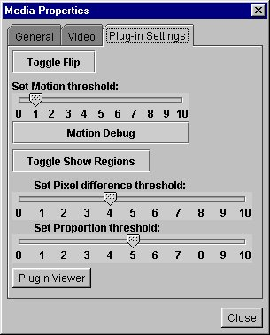
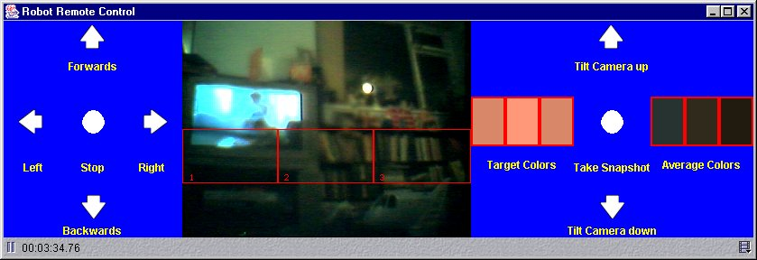

|
|
Start of Tutorial |
It provides motion detection, color detection, light detection and interfacing with robots that use the Lego Mindstorms RCX brick, to allow Mindstorms robots to respond to what they see.
It supports most of the functions of the Lego Vision Command software, but in an open extensible way that will allow much more sophisticated functionality to be added.
Although it is designed for use for the Lego Cam that comes with the Lego Mindstorms Vision Command product, it will work with most PC Web cameras. It has been with the X10 XCam2 wireless camera. This camera can be mounted on a Lego Robot to avoid the trailing USB wire, which is a problem with the Lego Cam.
Examples of possible responses, supported by the API, are:
import josx.vision.*;
public class Motion implements MotionListener {
private static int image = 1;
long lastPlay = 0;
public static void main(String [] args) {
(new Motion()).run();
}
private void run() {
Vision.setImageSize(320, 240);
Vision.addRectRegion(1, 0, 0, 320, 240);
Vision.addMotionListener(1, this);
Vision.startViewer("Intruder Detector");
}
public void motionDetected(int region) {
if ((System.currentTimeMillis() - lastPlay) > 1000) {
lastPlay = System.currentTimeMillis();
Vision.snapshot("Intruder" + image++ + ".jpg");
Vision.playSound("../../Effects/Alarm.wav");
}
}
}
It is best that your camera is plugged in when you install JMF, as this will ensure that the capture devices for it are put in the JMF registry.
This is for the Quickcam which is similar to the Lego Camera. Note that you need to get the source from CVS and checkout the qc-usb module.
The JMF from Sun does not pick up the camera correctly and so you need to use the JMF from
Blackdown.org. However, at the time of this writing, there was an issue with licensing and Blackdown
had stopped the downloads but you can still get it from the mirror below:
You can get this from:
http://www.opennms.org/files/mirrors/blackdown-java/JMF/2.1.1/i386/fcs/
You may have problems with the XLibRenderer plugin. If so, you can use the AWTRenderer instead.
export LD_LIBRARY_PATH=$LD_LIBRARY_PATH:$JMFHOME/lib
Run the JMStudio application to determine what video and sound capture
devices are available on your system.
Look at properties to determine the video and sound capture devices.
If the camera was not on when JMF was installed try doing "Detect capture devices".
If this does not work, try calling jmfinit from the JMF bin directory.
Edit the video.properties files in \examples\vision\motion.
There is currently a version in each example directory and you need to edit
each one to run the example. You need to set video-device-name and
sound-device-name to the exact text in the JMF registry. If Direct Sound
capture is available on your windows machine, use that, as Java Sound capture
does not seem to work on some PCs.
For some of the examples, you need to copy the Effects directory from the
Lego Vision Command VCSData and Piano and any other instrument
directory you want from the VCSData\Instruments directories.
For a default installation of the Lego Vision Command software
the full path for VCSData is
c:\Program Files\LEGO MINDSTORMS\Vision Command\data\hdData\VCSData.
They should be copied to subdirectories of \vision, e.g. c:\vision\Efects
and c:\vision\Piano.
\examples\vision\motion and do:
javac Motion.java
java Motion
An alarm is sounded and a file Intruder[n].jpg is produced whenever motion
is detected.
\examples\vision\alarm and do:
javac Alarm.java
java Alarm
This is a security alarm that can be turned off by the correct color being detected in region 3. You will probably need to edit the source to change the color to one that is detected by your camera. The current average RGB value is what is being detected in region 3 is displayed on System.out.
\examples\vision\music and do:
javac Music.java
java Music Piano
You can use other instruments that are available with the Lego Vision Command software, e.g. "Guitar2"
It is a very simple light seeking example. When it sees light in the central region it moves forward. When it sees light in the left or right regions, it turns towards the light.
It needs the Rover example program running on the RCX.
Change directory to
and press the Run button on the RCX.
You then need to compile and run the PC program.
Shine a bright light at the camera to move the robot about.
It needs the Rover example program running on the RCX.
Change directory to
and press the Run button on the RCX.
You then need to compile and run the PC program.
You should see a display with the image viewer in the center, remote controls
for the robot on the left, and camera and color controls of the right.
Move the robot about with the remote controls. Flip the camera up and down,
as necessary, to see what you need to see. When the robot gets near a red
object, it will move towards it and attempt to push it forwards. Click on
the little Media Properties control at the bottom right of the ImageViewer
and choose the Plug-In Settings, to control color sensitivity and the
proportion of the region that needs to be filled with the specified color.
Edit the RemoteControl.java program and change the color if you need to.

Have fun.
\examples\vision\light\rcx<\code> and do:
lejosc Rover.java
lejos Rover
To do this, change directory to \examples\vision\light\pc and do:
javac Light.java
java Light
Remote control example

This example uses the RCX remote control class to control the robot and let
the robot respond to what it sees.
\examples\vision\light\rcx and do:
lejosc Rover.java
lejos Rover
To do this, change directory to \examples\vision\remote\pc and do:
javac *.java
java RemoteControl
The leJOS Tutorial
Start of Tutorial